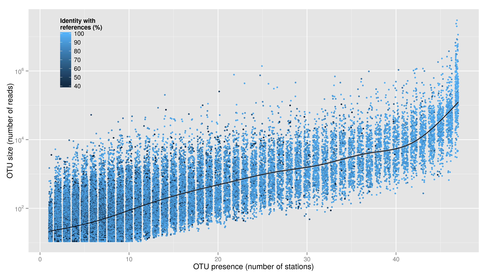

Manipulation de données et visualisation sous R
ggplot2, dyplr & tidyr
collectif de bioinformatique de Baillarguet
R

- 1993
- logiciel libre
- multi-plateforme
- modulaire et en forte croissance
Popularité croissante

Nombre de modules croissant

Hadley Wickham

Hadley Wickham
manipulation (unifiée) et visualisation de données
RStudio
interface graphique pour R (et bien plus)

Cleaning and visualizing genomic data
a case study in tidy analysis

par David Robinson
Coordination of Growth Rate, Cell Cycle, Stress Response, and Metabolic Activity in Yeast
Brauer et al. (2008) Mol. Biol. Cell January 1, 2008 vol. 19 no. 1 352-367 (doi: 10.1091/mbc.E07-08-0779)
http://varianceexplained.org/files/Brauer2008_DataSet1.tds
Premières commandes avec RStudio
Brauer2008_DataSet1 <- read.delim("/tmp/Rtmp3mlo42/data1aaa3ddc8686")
View(Brauer2008_DataSet1)
dim(Brauer2008_DataSet1)
Nombre de colonnes et de lignes
Description des données
6 milieux de culture en déficit d'un nutriment :
- glucose (G)
- ammonium (N)
- phosphate (P)
- sulfate (S)
- leucine (L)
- uracil (U)
6 vitesses de croissance: lent (0,05) à rapide (0,3).
Disposition des données : pourquoi changer ?
Les outils d'Hadley Wickham réclament :
- chaque variable forme une colonne,
- chaque observation forme une ligne,
- un type d'observation par tableau.
Ce qui ne va pas dans la disposition actuelle :
- G0.05 n'est pas un nom de variable,
- plusieurs variables dans la colonne NAME.
Séparer la colonne NAME en plusieurs variables
La colonne NAME contient :
- un nom de gène (ex : SFB2) ou rien,
- un nom de processus biologique,
- une fonction moléculaire,
- un identifiant,
- un autre identifiant (?)
Séparer les variables facilite l'exploration et permet de poser des questions plus précises.
Séparer la colonne NAME en plusieurs variables
library(dplyr)
library(tidyr)
cleaned_data <- original_data %>%
separate(NAME, c("name", "BP", "MF", "systematic_name", "number"), sep = "\\|\\|")
View(cleaned_data)
Autre possibilité
library(dplyr)
library(tidyr)
cleaned_data <- separate(Brauer2008_DataSet1, NAME, c("name", "BP", "MF", "systematic_name", "number"), sep = "\\|\\|")
Élimination des espaces
head(cleaned_data$BP)
## [1] " ER to Golgi transport " " biological process unknown "
## [3] " proteolysis and peptidolysis " " mRNA polyadenylylation* "
## [5] " vesicle fusion* " " biological process unknown "
Élimination des espaces
fonction trimws (trim whitespace) :
cleaned_data <- Brauer2008_DataSet1 %>%
separate(NAME, c("name", "BP", "MF", "systematic_name", "number"), sep = "\\|\\|") %>%
mutate_each(funs(trimws), name:systematic_name)
[1] "ER to Golgi transport" "biological process unknown"
[3] "proteolysis and peptidolysis" "mRNA polyadenylylation*"
[5] "vesicle fusion*" "biological process unknown"
Élimination de colonnes
fonction select de dplyr :
cleaned_data <- Brauer2008_DataSet1 %>%
separate(NAME, c("name", "BP", "MF", "systematic_name", "number"), sep = "\\|\\|") %>%
mutate_each(funs(trimws), name:systematic_name) %>%
select(-number, -GID, -YORF, -GWEIGHT)
glimpse(cleaned_data)
Observations: 5537
Variables:
$ name (chr) "SFB2", "", "QRI7", "CFT2", "SSO2", "PSP2", ...
$ BP (chr) "ER to Golgi transport", "biological process...
$ MF (chr) "molecular function unknown", "molecular fun...
$ systematic_name (chr) "YNL049C", "YNL095C", "YDL104C", "YLR115W", ...
$ G0.05 (dbl) -0.24, 0.28, -0.02, -0.33, 0.05, -0.69, -0.5...
$ G0.1 (dbl) -0.13, 0.13, -0.27, -0.41, 0.02, -0.03, -0.3...
$ G0.15 (dbl) -0.21, -0.40, -0.27, -0.24, 0.40, 0.23, -0.1...
...
Passage au format Wickham
objectif : une colonne par variable. Passage de 36 colonnes à 3 (nutriment, taux de croissance, expression) avec la fonction gather de tidyr :
cleaned_data <- Brauer2008_DataSet1 %>%
separate(NAME, c("name", "BP", "MF", "systematic_name", "number"), sep = "\\|\\|") %>%
mutate_each(funs(trimws), name:systematic_name) %>%
select(-number, -GID, -YORF, -GWEIGHT) %>%
gather(sample, expression, G0.05:U0.3)
glimpse(cleaned_data)
Passage au format Wickham
objectif : une colonne par variable. Passage de 36 colonnes à 3 (nutriment, taux de croissance, expression) avec la fonction gather de tidyr :
Observations: 199332
Variables:
$ name (chr) "SFB2", "", "QRI7", "CFT2", "SSO2", "PSP2", ...
$ BP (chr) "ER to Golgi transport", "biological process...
$ MF (chr) "molecular function unknown", "molecular fun...
$ systematic_name (chr) "YNL049C", "YNL095C", "YDL104C", "YLR115W", ...
$ sample (fctr) G0.05, G0.05, G0.05, G0.05, G0.05, G0.05, G...
$ expression (dbl) -0.24, 0.28, -0.02, -0.33, 0.05, -0.69, -0.5...
...
Séparation des variables nutriment et taux de croissance
fonction separate de tidyr :
cleaned_data <- Brauer2008_DataSet1 %>%
separate(NAME, c("name", "BP", "MF", "systematic_name", "number"), sep = "\\|\\|") %>%
mutate_each(funs(trimws), name:systematic_name) %>%
select(-number, -GID, -YORF, -GWEIGHT) %>%
gather(sample, expression, G0.05:U0.3) %>%
separate(sample, c("nutrient", "rate"), sep = 1, convert = TRUE)
glimpse(cleaned_data)
Séparation des variables nutriment et taux de croissance
fonction separate de tidyr :
Observations: 199332 Variables: $ name (chr) "SFB2", "", "QRI7", "CFT2", "SSO2", "PSP2", ... $ BP (chr) "ER to Golgi transport", "biological process... $ MF (chr) "molecular function unknown", "molecular fun... $ systematic_name (chr) "YNL049C", "YNL095C", "YDL104C", "YLR115W", ... $ nutrient (fctr) G, G, G, G, G, G, G, G, G, G, G, G, G, G, G... $ rate (dbl) 0.05, 0.05, 0.05, 0.05, 0.05, 0.05, 0.05, 0.... $ expression (dbl) -0.24, 0.28, -0.02, -0.33, 0.05, -0.69, -0.5...
Focus sur le gène LEU1
fonction filter de dplyr :
cleaned_data %>%
filter(name == "LEU1") %>%
View()
LEU1 est un gène participant à la synthèse de la leucine. On a 36 observations (6 conditions et 6 taux de croissance).
Visualisation avec ggplot2
fonction filter de dplyr :
library(ggplot2)
cleaned_data %>%
filter(name == "LEU1") %>%
ggplot(aes(rate, expression, color = nutrient)) +
geom_line()
LEU1 est un gène participant à la synthèse de la leucine. On a 36 observations (6 conditions et 6 taux de croissance).
ggplot2 ? gnéé ??
grammaire graphique :données + géométrie + système de coordonnées = graphique
ggplot(data = cleaned_data,
aes(x = rate, y = expression, color = nutrient)) +
geom_line()
système de coordonnées cartésien par défaut (polaire, logarithmique, cartographique, ...)
Visualisation avec ggplot2

Focus sur les gènes LEU
cleaned_data %>%
filter(BP == "leucine biosynthesis") %>%
ggplot(aes(rate, expression, color = nutrient)) +
geom_line() +
facet_wrap(~name)
Visualisation avec ggplot2

Focus sur les gènes LEU
ajustement de droite (modèle linéaire, ou lm)
cleaned_data %>%
filter(BP == "leucine biosynthesis") %>%
ggplot(aes(rate, expression, color = nutrient)) +
geom_point() +
geom_smooth(method = "lm", se = FALSE) +
facet_wrap(~name)
Visualisation avec ggplot2

Focus sur le métabolisme du soufre
cleaned_data %>%
filter(BP == "sulfur metabolism") %>%
ggplot(aes(rate, expression, color = nutrient)) +
geom_point() +
geom_smooth(method = "lm", se = FALSE) +
facet_wrap(~name + systematic_name, scales = "free_y")
Visualisation avec ggplot2

Script complet
library(dplyr)
library(tidyr)
library(ggplot2)
Brauer2008_DataSet1 <- read.delim("/tmp/RtmpmIvzA5/data67167154fe1d")
cleaned_data <- Brauer2008_DataSet1 %>%
separate(NAME, c("name", "BP", "MF", "systematic_name", "number"), sep = "\\|\\|") %>%
mutate_each(funs(trimws), name:systematic_name) %>%
select(-number, -GID, -YORF, -GWEIGHT) %>%
gather(sample, expression, G0.05:U0.3) %>%
separate(sample, c("nutrient", "rate"), sep = 1, convert = TRUE)
cleaned_data %>%
filter(BP == "leucine biosynthesis") %>%
ggplot(aes(rate, expression, color = nutrient)) +
geom_point() +
geom_smooth(method = "lm", se = FALSE) +
facet_wrap(~name)
Modeling gene expression with broom
a case study in tidy analysis
par David Robinsonanalyses supplémentaires sur le même jeu de données
section en chantier
ggbio

ggtree

TARA Oceans
relation entre fréquence, dispersion et diversité des taxons
Cosmétique: gg_theme()
Exporter sa figure
Gerer des données temporelles/spatiales
Données d'abondances de cullicoides sur des piègages en France métropolitaine sur plusieurs années.

Format csv -> "comma separated value"
Les champs sont séparés par le charactère "|"

data = read.table("uniqDataOcapi.csv",sep="|",header=T, na.strings = "NA",\
fill=TRUE, strip.white=TRUE, blank.lines.skip = TRUE)
str(data)
'data.frame': 54647 obs. of 12 variables:
$ ID_SITE : Factor w/ 298 levels "01PL1","01PL2",..: 1 1 1 1 1 1 1 1 1 1 ...
$ LONG_IDENTIF: num 5.79 5.79 5.79 5.79 5.79 5.79 5.79 5.79 5.79 5.79 ...
$ LAT_IDENTIF : num 46.1 46.1 46.1 46.1 46.1 ...
$ DATEDEBUT : Factor w/ 1133 levels "10/10/2008","10/10/2011",..: 12 26 51 69 69 69 69 158 170 203 ...
$ ESPECE : Factor w/ 89 levels "abchazicus","achrayi",..: 15 15 53 44 53 54 65 15 53 15 ...
$ NBMALES : int 0 0 0 0 0 1 0 0 0 0 ...
$ NBFEMELLES : int 0 0 4 11 226 0 14 0 2 0 ...
$ NBPARE : int 0 0 4 6 192 0 14 0 1 0 ...
$ NBNULLIPARE : int 0 0 0 5 34 0 0 0 1 0 ...
$ NBGORGEES : int 0 0 0 0 0 0 0 0 0 0 ...
$ NBINDIV : int 0 0 4 11 226 1 14 0 2 0 ...
$ NBINDETER : int 0 0 0 0 0 0 0 0 0 0 ...
data %>% tbl_df %>% View

data %>% tbl_df %>% filter(., NBINDIV>0) %>% na.omit %>% View

data %>% tbl_df %>% filter(., NBINDIV>0) %>% na.omit %>% \
mutate(.,lat = as.numeric(LAT_IDENTIF)) %>% \
mutate(.,long = as.numeric(LONG_IDENTIF)) %>% \
mutate(.,date = as.Date(DATEDEBUT,"%m/%d/%Y")) \
mutate(.,SexRatio = NBFEMELLES/(NBMALES+NBFEMELLES)) %>% View

data %>% tbl_df %>% filter(., NBINDIV>0) %>% na.omit %>% \
mutate(.,lat = as.numeric(LAT_IDENTIF)) %>% \
mutate(.,long = as.numeric(LONG_IDENTIF)) %>% \
mutate(.,date = as.Date(DATEDEBUT,"%m/%d/%Y")) \
mutate(.,SexRatio = NBFEMELLES/(NBMALES+NBFEMELLES)) \
separate(.,date,c("year","month","day")) %>% View

data %>% tbl_df %>% filter(., NBINDIV>0) %>% na.omit %>% \
mutate(.,lat = as.numeric(LAT_IDENTIF)) %>% \
mutate(.,long = as.numeric(LONG_IDENTIF)) %>% \
mutate(.,date = as.Date(DATEDEBUT,"%m/%d/%Y"))
mutate(.,SexRatio = NBFEMELLES/(NBMALES+NBFEMELLES)) \
separate(.,date,c("year","month","day")) \
select(.,ID_SITE,long,lat,year,month,day,ESPECE,SexRatio,NBINDIV,NBMALES,NBFEMELLES,) %>% View

data %>% tbl_df %>% filter(., NBINDIV>0) %>% na.omit %>% \
mutate(.,lat = as.numeric(LAT_IDENTIF)) %>% \
mutate(.,long = as.numeric(LONG_IDENTIF)) %>% \
mutate(.,date = as.Date(DATEDEBUT,"%m/%d/%Y"))
mutate(.,SexRatio = NBFEMELLES/(NBMALES+NBFEMELLES)) \
separate(.,date,c("year","month","day")) \
select(.,ID_SITE,long,lat,year,month,day,ESPECE,SexRatio,NBINDIV,NBMALES,NBFEMELLES,) \
gather(.,"variable","value",NBINDIV,SexRatio,NBMALES,NBFEMELLES) %>% View

td = data %>% tbl_df %>% filter(., NBINDIV>0) %>% na.omit %>% \
mutate(.,lat = as.numeric(LAT_IDENTIF)) %>% \
mutate(.,long = as.numeric(LONG_IDENTIF)) %>% \
mutate(.,date = as.Date(DATEDEBUT,"%m/%d/%Y"))
mutate(.,SexRatio = NBFEMELLES/(NBMALES+NBFEMELLES)) \
separate(.,date,c("year","month","day")) \
select(.,ID_SITE,long,lat,year,month,day,ESPECE,SexRatio,NBINDIV,NBMALES,NBFEMELLES,) \
gather(.,"variable","value",NBINDIV,SexRatio,NBMALES,NBFEMELLES)
> td
Source: local data frame [193,332 x 9]
ID_SITE long lat year month day ESPECE variable value
(fctr) (dbl) (dbl) (chr) (chr) (chr) (fctr) (fctr) (dbl)
1 01PL1 5.79 46.06 2009 10 26 obsoletus/scoticus NBINDIV 4
2 01PL1 5.79 46.06 2009 10 05 lupicaris NBINDIV 11
3 01PL1 5.79 46.06 2009 10 05 obsoletus/scoticus NBINDIV 226
4 01PL1 5.79 46.06 2009 10 05 obsoletus s.st NBINDIV 1
5 01PL1 5.79 46.06 2009 10 05 pulicaris NBINDIV 14
6 01PL1 5.79 46.06 2009 11 23 obsoletus/scoticus NBINDIV 2
7 01PL1 5.79 46.06 2009 04 14 chiopterus NBINDIV 14
8 01PL1 5.79 46.06 2009 04 14 newsteadi NBINDIV 1
9 01PL1 5.79 46.06 2009 04 14 obsoletus/scoticus NBINDIV 58
10 01PL1 5.79 46.06 2009 04 14 obsoletus s.st NBINDIV 1
.. ... ... ... ... ... ... ... ... ...
td = data %>% tbl_df %>% filter(., NBINDIV>0) %>% na.omit %>% \
mutate(.,lat = as.numeric(LAT_IDENTIF)) %>% \
mutate(.,long = as.numeric(LONG_IDENTIF)) %>% \
mutate(.,date = as.Date(DATEDEBUT,"%m/%d/%Y"))
mutate(.,SexRatio = NBFEMELLES/(NBMALES+NBFEMELLES)) \
mutate(.,datesp = date)
separate(.,datesp,c("year","month","day")) \
select(.,ID_SITE,long,lat,year,month,day,ESPECE,SexRatio,NBINDIV,NBMALES,NBFEMELLES,) \
gather(.,"variable","value",NBINDIV,SexRatio,NBMALES,NBFEMELLES)
> td
Source: local data frame [193,332 x 10]
ID_SITE long lat date year month day ESPECE variable
(fctr) (dbl) (dbl) (date) (chr) (chr) (chr) (fctr) (fctr)
1 01PL1 5.79 46.06 2009-10-26 2009 10 26 obsoletus/scoticus NBINDIV
2 01PL1 5.79 46.06 2009-10-05 2009 10 05 lupicaris NBINDIV
3 01PL1 5.79 46.06 2009-10-05 2009 10 05 obsoletus/scoticus NBINDIV
4 01PL1 5.79 46.06 2009-10-05 2009 10 05 obsoletus s.st NBINDIV
5 01PL1 5.79 46.06 2009-10-05 2009 10 05 pulicaris NBINDIV
6 01PL1 5.79 46.06 2009-11-23 2009 11 23 obsoletus/scoticus NBINDIV
7 01PL1 5.79 46.06 2009-04-14 2009 04 14 chiopterus NBINDIV
8 01PL1 5.79 46.06 2009-04-14 2009 04 14 newsteadi NBINDIV
9 01PL1 5.79 46.06 2009-04-14 2009 04 14 obsoletus/scoticus NBINDIV
10 01PL1 5.79 46.06 2009-04-14 2009 04 14 obsoletus s.st NBINDIV
.. ... ... ... ... ... ... ... ... ...
Variables not shown: value (dbl)
graphique interactif avec plotly
Tabular Tables
| Item | Value | Quantity |
|---|---|---|
| Apples | $1 | 7 |
| Lemonade | $2 | 18 |
| Bread | $3 | 2 |